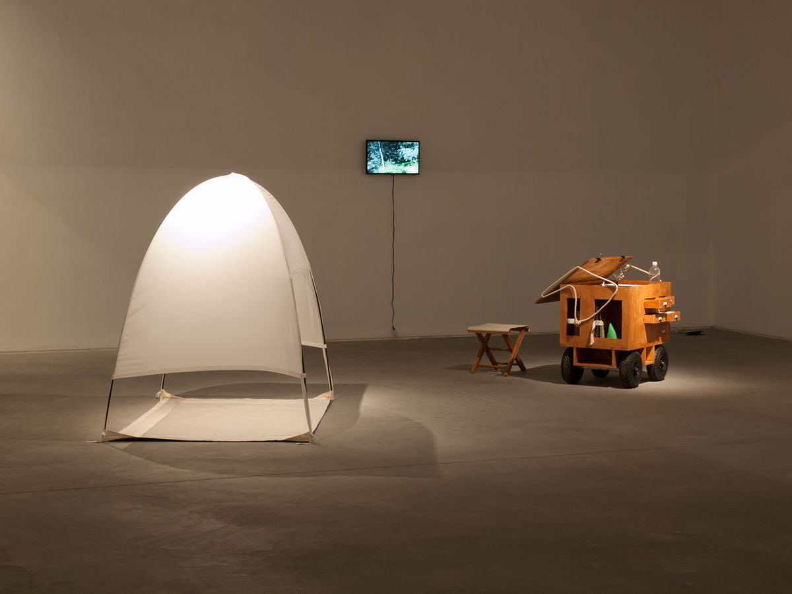
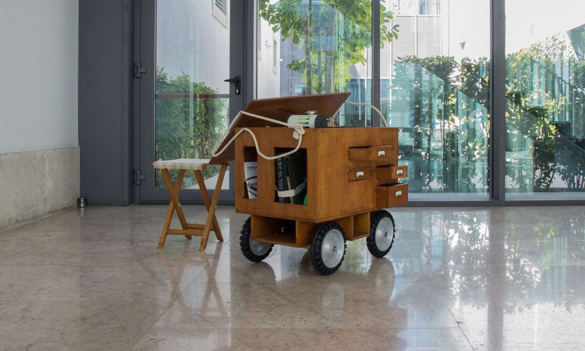
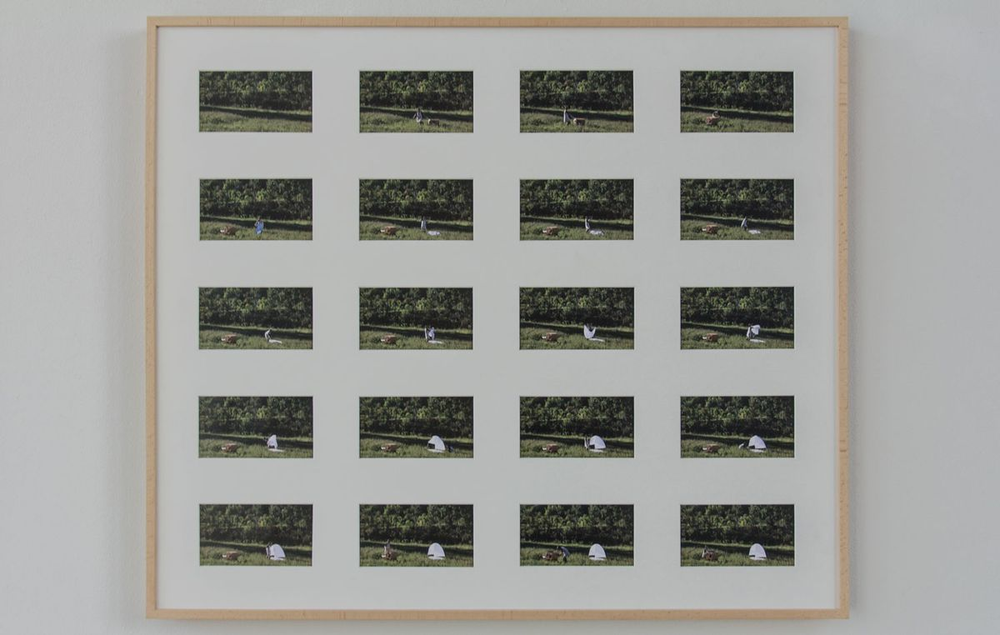
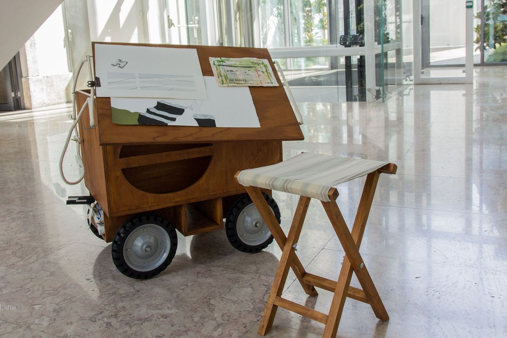

Portable Studio
Carlos Carvalho Arte Contemporânea, Lisbon, 2014 · Abreu Advogados / Carpe Diem Arte e Pesquisa, Lisbon, 2019
The Portable Studio is a box on wheels, built to my own requirements for drawing in the field. It is not used as a studio: it belongs to a fiction set up to think through the process and circulation of the work, from studio to museum, by means of mobile structures. This studio/object/container unfolds in the open air and holds a series of utilitarian objects I have made: a tent-shelter that can be put up and taken down, a work smock and a field notebook. The smock/dress is itself a container/studio, with pockets designed to hold specific objects and materials. The work includes photographic records and video of performances in the field, made in collaboration with the photographer Rui Pinheiro.




Texts
- Catarina LeitãoLaura Sequeira Falé · Carpe Diem Arte e Pesquisa / Abreu Advogados, Lisboa · 06.2019 · PT / EN